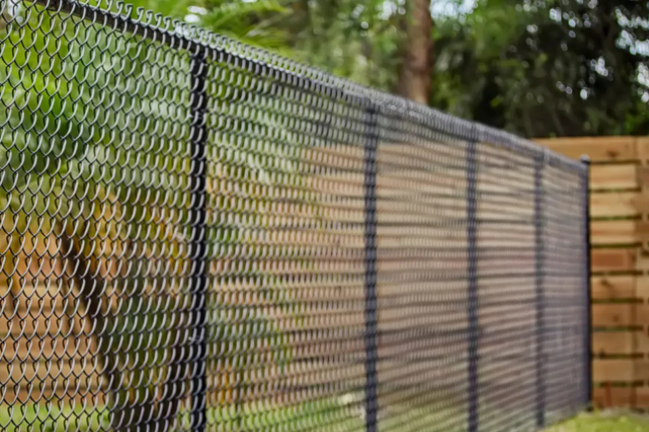

Fabric and height
A heavier gauge and a taller line cost more than a 4-foot yard fence.
Commercial fencing
Fencing for yards, shops, and job sites that need a heavier line than a house panel. Chain link, screens, and vehicle gates, quoted from the site.

Commercial work is a spec: fabric weight, height, gate width, and who has to get in. A residential privacy panel around a storage yard is the wrong product. In Fargo’s commercial districts the height cap is generally 8.5 feet, and it drops to 6.5 feet along a residential property line.
We do not treat a commercial fence as a tall version of a backyard chain-link kit. Gates get the most use and fail first. If the site needs access control or an opener, that is named in the quote instead of being assumed. Bring the site plan if you have one. If you do not, we measure.
We price the line on the lot. These are the pieces that move the number. We do not publish a per-foot menu.
A heavier gauge and a taller line cost more than a 4-foot yard fence.
Commercial perimeters add up. Corners and grade changes matter as much as the total feet.
Width, single or double, and whether the leaf is manual or automated.
Privacy screen adds material and wind load. It is not free because the posts were already there.
A fence next to a home cannot always be as tall as the fence facing the street.
Occupied sites, paving, and buried lines slow the set.
Height is only part of it. Commercial work uses heavier fabric, heavier terminal posts, and gates built for trucks. A residential panel kit will rack and sag under that use. The quote names the gauge and the gate, not just the feet.
In commercial and industrial districts, the land-development code generally caps fences at 8.5 feet. Along a property line that touches a residential zone, the limit drops to 6.5 feet within 3 feet of that line. Anything over 8.5 feet needs a building permit and has to meet setbacks. Confirm the zoning before we order.
Yes. Tell us the widest vehicle that has to pass, and whether the gate is manual or needs an opener. A drive gate is framed and hung on its own posts. We do not stretch yard fabric across a driveway and call it a gate.
When the spec calls for it. Screen hides a yard and it also catches wind, so the posts and the spacing have to match. On a frontage that has to stay open for sight distance, we leave the mesh bare.
The address, what the yard is used for, an idea of the height, and how many vehicle openings you need. If a survey or site plan exists, it saves a second trip. We still look at the ground before the number is final.